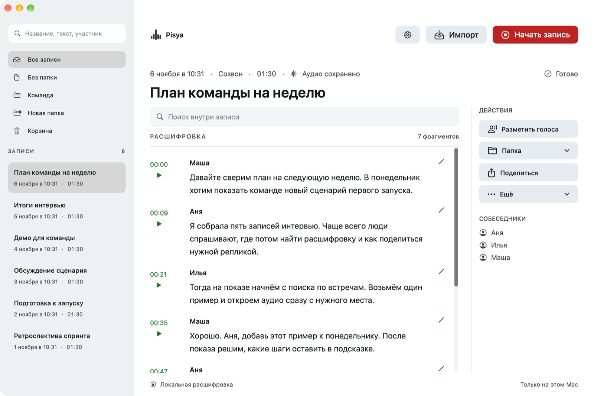

01
Встреча становится текстом
Записывайте микрофон и системный звук. Pisya расшифрует разговор прямо на вашем Mac, а вы сможете найти нужную реплику и переслушать её.
Pisya записывает встречи и превращает их в текст. Чтобы вы могли слушать, думать и возвращаться к важному.
Для Mac с Apple Silicon · macOS 15 и новее

Не нужно выбирать между вниманием к людям и подробными заметками. Pisya бережно сохранит разговор, чтобы вы могли вернуться к нему позже.
Записывайте микрофон и системный звук. Pisya расшифрует разговор прямо на вашем Mac, а вы сможете найти нужную реплику и переслушать её.
Ищите по встречам и тексту, раскладывайте записи по папкам, исправляйте расшифровки и имена участников.
Сохраняйте расшифровки в Markdown или подключайте AI-инструменты через MCP, чтобы работать с контекстом встреч.
Аудио и расшифровки остаются на вашем компьютере. Для распознавания они не отправляются на сервер.
Не обязательно верить на слово. Исходный код Pisya открыт: можно посмотреть, как всё устроено, и проверить самостоятельно.
Открыть исходный код на GitHubЕсли вы сами включите экспорт в облачную папку или подключите AI-клиент через MCP, текст может попасть в выбранный сервис.
Pisya уже можно пользоваться, но она ещё не идеальна. Устанавливая её сейчас, вы становитесь частью тестирования: пробуете, замечаете ошибки и помогаете приложению становиться лучше.
Разработка продолжается. Будем двигаться к идеальной Pisya шаг за шагом.
Pisya проверяет новые версии и предлагает их установить. Автоматическую установку можно включить в настройках.
Распознавание и определение участников могут ошибаться. Перед использованием стоит проверить текст.
Установите Pisya и попробуйте на ближайшей встрече.
Скачать для MacApple Silicon · macOS 15+ · потребуется около 3 ГБ для моделей
Сборка пока не прошла нотариальную проверку Apple. После загрузки потребуется один дополнительный шаг.
Полная инструкция на GitHub ↗Скачайте DMG, откройте его и перетащите Pisya в «Программы».
Откройте Терминал и выполните команду для Pisya, скачанной из официального репозитория:
xattr -dr com.apple.quarantine "/Applications/Pisya.app"Запустите Pisya из «Программ» и загрузите модели при первой настройке.